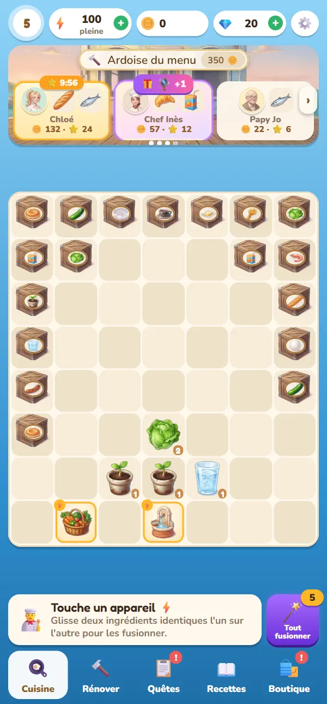

← Nos jeux
Journal : Cuisine du Port
Ce qui change à chaque version, du plus récent au plus ancien.
Version 55
24 novembre 2026
La baguette magique part tout de suite, sans fenêtre de confirmation.
Version 54
24 novembre 2026
Défis, quêtes et médailles : les gains peuvent être multipliés par 4 avec une pub, ou par 2 avec des diamants.

Version 53
24 novembre 2026
Le bandeau du bas garde toujours la même taille.
Les images du jeu sont rangées en fichiers séparés (plus léger).
Version 52
24 novembre 2026
Progression plus lente : missions avec plusieurs objectifs, travaux plus chers, énergie +1 toutes les 2 minutes.
Versions 50 et 51
24 novembre 2026
Une petite explication s'affiche la première fois qu'on gagne un objet spécial (joker, miroir, réveil, baguette).
Avant
22 et 23 novembre 2026
Création du jeu, puis tous les dessins refaits avec Gemini.
Clients, restaurant à rénover en 6 lieux, coffres, tirelire, carte du tour du monde, animations.